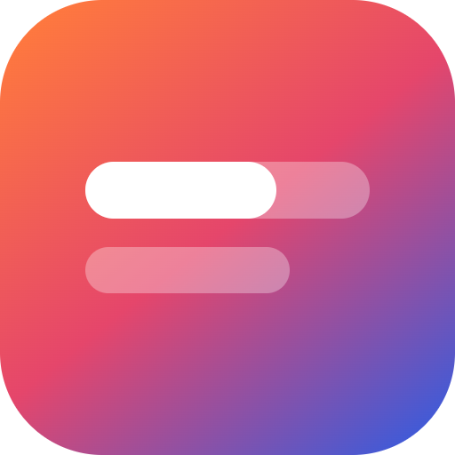

LyriqueWindows
Lyrique's Windows installers are signed so Windows can confirm they come from this project and haven't been changed. Signing is being set up with SignPath Foundation; until it's in place, the Windows beta is unsigned and Windows SmartScreen may warn when you run it.
Only the Windows installers (Lyrique-<version>-x64.exe and Lyrique-<version>-arm64.exe) built by GitHub Actions from the public source code at github.com/Myo-Myint/lyrique, using the Windows build workflow in that repository. Nothing built on a personal computer is signed. Every signing request is approved by hand before it is signed, and only for releases published on the releases page.
| Committers and reviewers | Myo-Myint (maintainer). Changes from anyone else arrive as pull requests and are reviewed before they are merged. |
|---|---|
| Approvers | Myo-Myint |
All team members use multi-factor authentication for GitHub and SignPath.
Lyrique has no account, no ads and no analytics. To show lyrics it sends the title, artist, album and length of the song you're playing to LRCLIB and QQ Music; for YouTube Music it downloads the song's cover art from YouTube's image servers. Lyric text goes to Google Translate only when you switch on translation or romanization, and Lyrique asks GitHub now and then whether a newer version is out, which you can turn off in Settings. Lyrics you synced yourself are shared with LRCLIB only if you choose to publish them and confirm. The installer shows this notice before installing.
Full details: privacy policy.
Lyrique is free software under the GNU General Public License v3.0. Every component is open source.